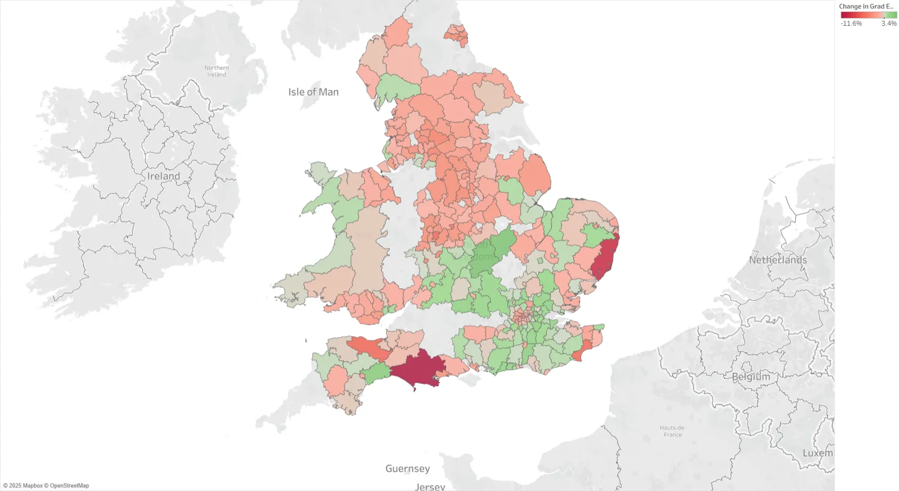

Graduate employment visual analytics
Census data from 2011 and 2021, harmonised to 292 local authority districts in England and Wales, turned into two Tableau stories that show where graduate employment rose, where it fell and what it might look like in 2030.
- Context
- MSc Data Science, University of Bristol (visual analytics)
- Year
- 2025
- Stack
- Tableau, Python, pandas, scikit-learn (PCA, K-Means, Bayesian Ridge), UMAP
- Status
- Complete
- Links
- Code on GitHub · Report (PDF)

- 292 Local authority districts 2011 and 2021 census data harmonised to 2021 boundaries
- 23 Indicators reduced with PCA Graduate-related and industry variables, clustered with K-Means
- 2030 Forecast year Bayesian Ridge forecast with 95% credible intervals
Problem
Graduate employment varies a lot between regions, and policymakers, universities and graduates need to see where it is improving, where it is lagging and which local factors go with it. The census gives the data, but it changes shape between 2011 and 2021, so it cannot be compared directly.
Approach
I cleaned the 2011 and 2021 census tables on qualifications, employment and industry, merged them at local authority district level and built two Tableau stories around tasks from Munzner's visualisation taxonomy, such as comparing, ranking, clustering and forecasting. The first story describes levels and the second covers change over time, structural similarity and a 2030 forecast.
For structure, PCA reduced 23 graduate and industry indicators to two dimensions, with K-Means colouring the clusters, and a Bayesian Ridge regression forecast graduate employment in 2030 with 95% credible intervals.
Key decision: harmonise to one set of boundaries before comparing anything
District boundaries changed between the two censuses, so I mapped the 2011 records onto the 2021 districts first, which gave 292 districts that mean the same place in both years. Without that, a change on the map could just be a boundary change.
Results
In a class review session, participants could read regional performance, change over time and outliers from the stories, and the choropleths made the lower performance of rural and coastal areas easy to spot. Tableau cannot draw uncertainty bars on the forecast chart natively, so the 95% credible intervals sit in the tooltips.
Limitations and next steps
- The evaluation was a class review session rather than a structured user study.
- Putting the forecast intervals in tooltips keeps them available but makes them easy to miss, so a chart type that shows uncertainty directly would be better.